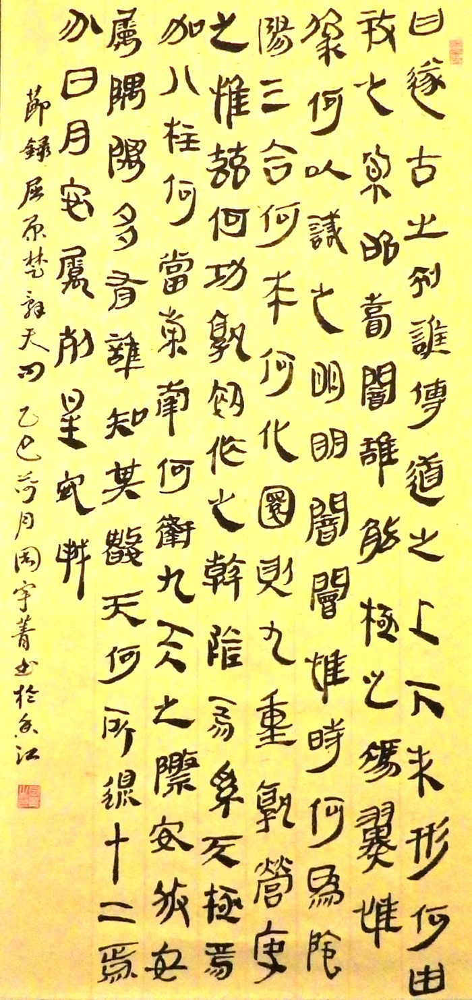

會員作品_香港銀雀山漢簡書法藝術展
Artworks_Hong Kong YQS Han Boomboo Slips Calligraphy Exhibition

陳定璟老師
作品:《蘭亭序》

陳寅添
作品:《孫子兵法 始計篇》

葉潔華
作品:《五議》

雷雲櫻
作品:《孫臏兵法-見威王》

李麗明
作品:《元曲兩首》

周宇菁
作品:《天問》


陳秀敏
作品:《水調歌頭 . 明月幾時有》

麥瑞惜
作品:《墨梅》

張明明
作品:《對聯》

譚若紅
作品:《為李進同志題所攝廬山仙人洞照》

哈殿昌
作品:《題宣州開元寺水閣閣下宛溪夾溪居人》

蔡敏潔
作品:《心隨意轉》

劉寶枝
作品:《贈別》

朱婉儀
作品:《清平调·其一》

蕭美玉
作品:《如夢令·常記溪亭日暮》

黃燕雲
作品:《漢簡墨韻》

何文娟
作品:《小齋宴座》

何文卿
作品:《山中留客》

陳素娟
作品:《詩聯》

陳映珊
作品:《贈藥山高僧惟巖其二》

羅裕華
作品:《聖經》

趙淑琴
作品:《青玉案 · 元夕》

羅桂芳
作品:《龜雖壽》

吳宏豪
作品:《酬中都小吏攜斗酒雙魚於逆旅見贈》

彭雅好
作品:《聖經 歌羅西書三章十二節》

陳妙婷
作品:《劍膽琴心》

林秀芬
作品:《秋思》